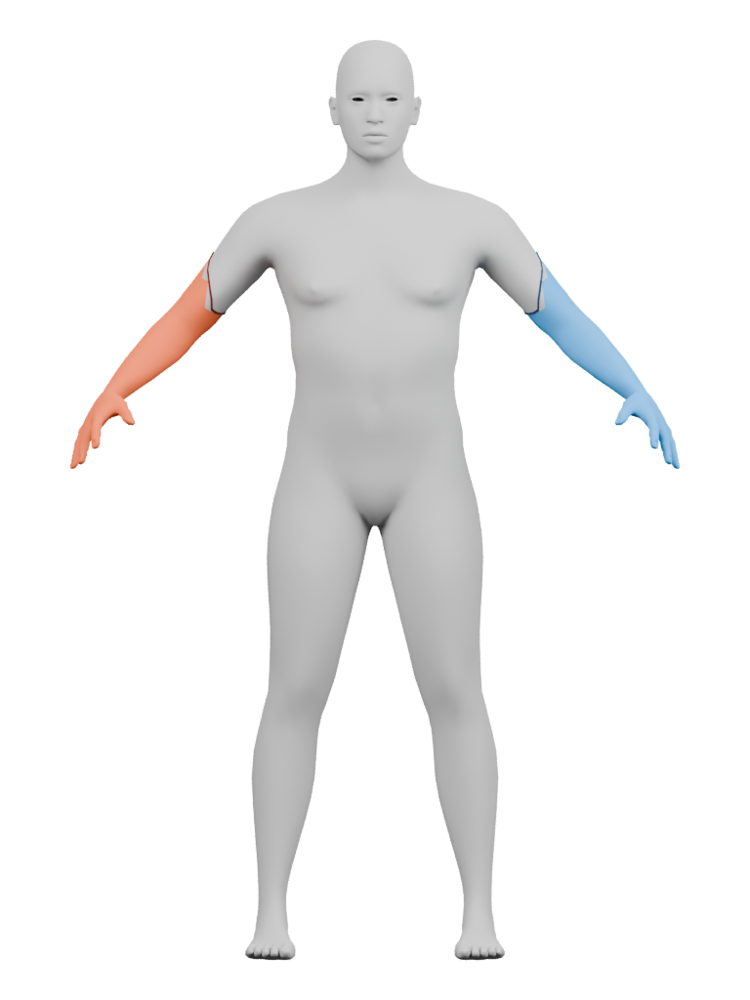
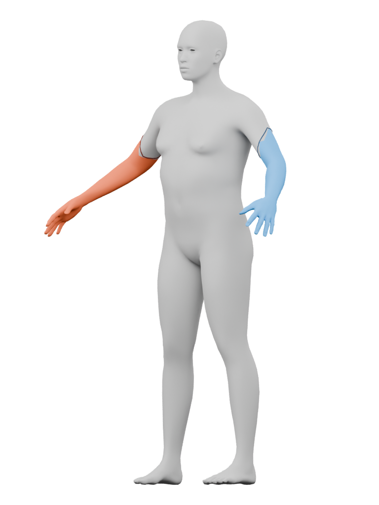
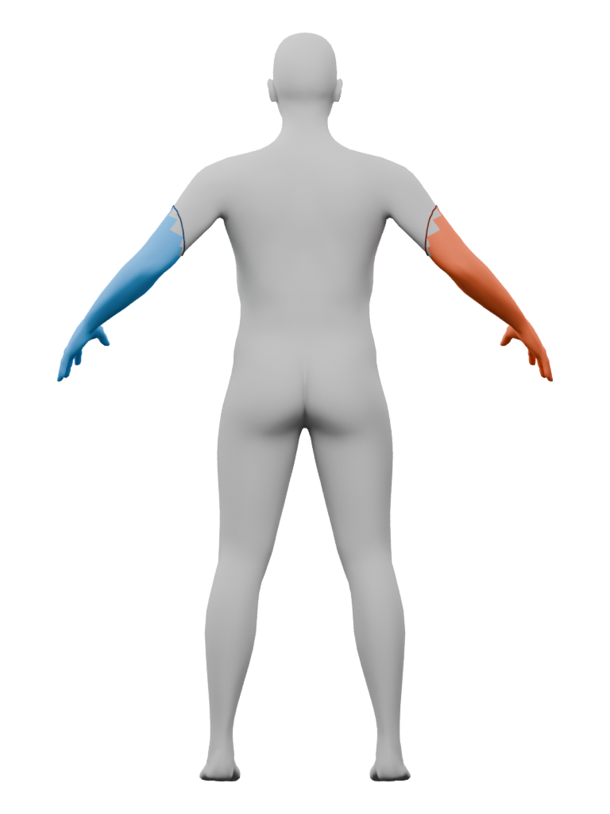

Ari · jacket registration study
Source-body diagnostics. Blue and rust show the two arm branches; dark lines show the tested boundary loops. Eyes, hair and the jacket are omitted.
Decision: keep the diagnostics; reject these loops as the bomber’s armholes. They sit below the shoulder transition. The jacket needs its own shoulder and underarm registration. This study does not establish garment fit.


